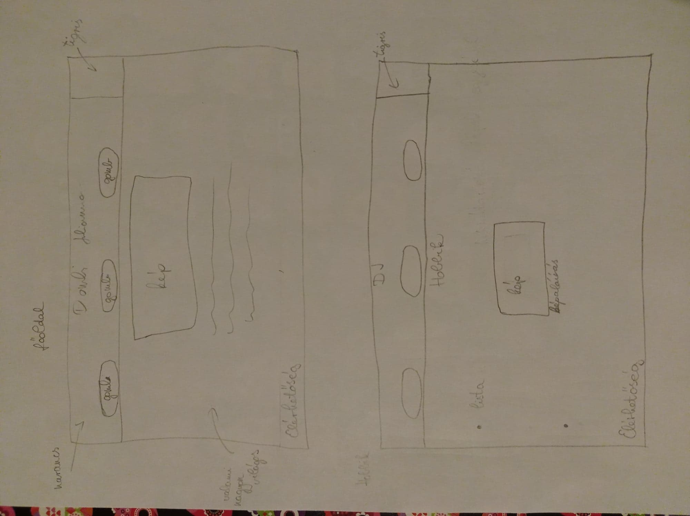
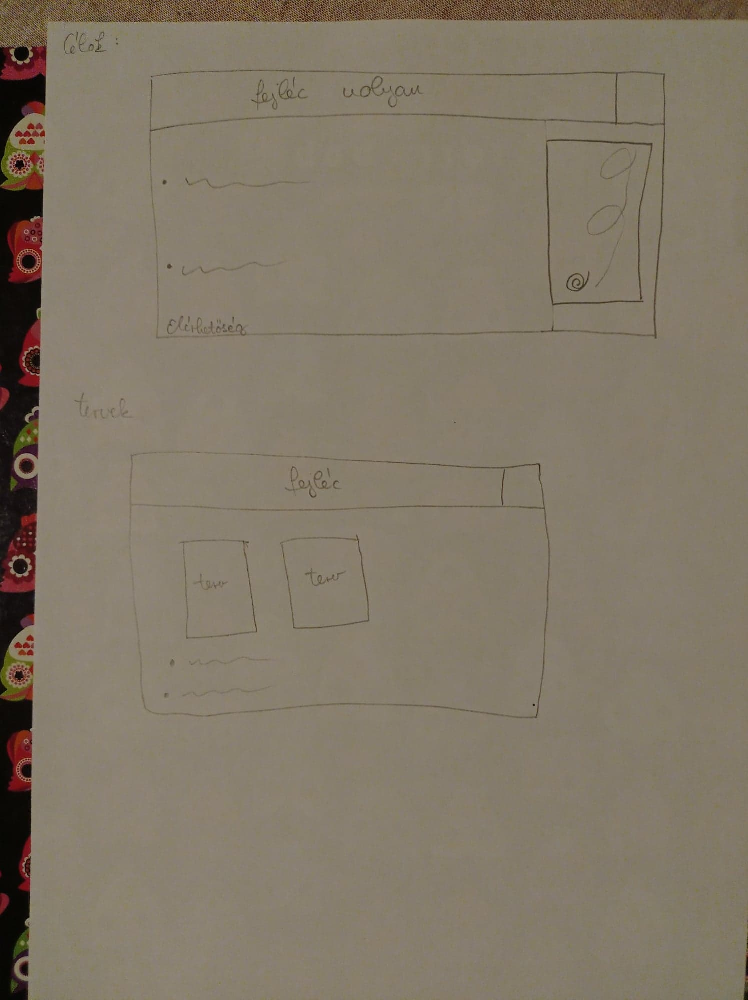

Grafikai tervek


- A grafikai terveim közül a legtöbb megvalósult. A gombok alakján változtattam, meg mindennek a színén, mert így nekem jobban tetszik.
- Nagyon sok időt (kb. fél-egy órát) töltöttem el azzal, hogy egy tigrises képet a fejlécben jobbra illesszek be úgy, hogy a fejlécben lévő többi dolgot ne zavarja, de a végeredmény nem tetszett, úgyhogy egy az egyben kitöröltem.
- A fejléc eredetileg korall lett volna, de valahogy nagyon visszataszítóan nézett ki vele az oldal, ezért lett inkább ilyen nagyon sötét kék, ami miatt a betűszínt is világosra kellett változtatnom.
- Eredetileg minden képet külön sorban szerettem volna középre igazítva, de végül nem így lett.
- Nagy problémát jelentett, hogy néha, ha megváltoztattam valamit, akkor az oldalon valamiért csak sokkal később jelent meg a változás, és emiatt sokszor hittem, hogy valamit elrontottam, pedig nem.
- Problémát jelentett az is, hogy miket írjak a weboldalamra, de végül olyan dolgokat írtam, amikhez tudtam valamilyen képet is tenni.
- Ezt az oldal volt nagy hasznomra, bár főleg csak a színekhez és hátterekhez használtam: w3schools